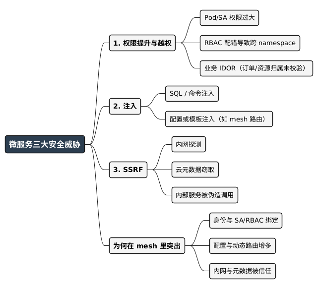

微服务的三大安全威胁
Posted on 四 12 2月 2026 in Tech
| Abstract | 微服务的三大安全威胁 |
|---|---|
| Authors | Walter Fan |
| Category | Journal |
| Version | v1.0 |
| Updated | 2026-02-12 |
| License | CC-BY-NC-ND 4.0 |
短大纲
- 用一次 "内网被扫、元数据被捞" 的排查经历开场，点出：服务网格里最常被利用的是权限提升、注入、SSRF，不是玄乎的零日
- 威胁一：权限提升与越权——Pod/ServiceAccount 滥用、RBAC 配错、跨租户 IDOR，各举一例
- 威胁二：注入类攻击——SQL/命令/配置或模板注入，在 mesh 里如何借配置或输入链进内网
- 威胁三：SSRF（服务端请求伪造）——内网探测、云元数据、调用内部服务，举例说明
- 总结 + 思维导图 + 明天就能做 + 适用边界 + 开放式问题
有一次排查 "某环境内网端口被扫、云元数据被访问" 的告警，查到最后不是谁在 "黑" 你，而是自家一个对外提供 "转链/预览" 的微服务，没校验 URL 就往后端发请求——攻击者塞进 http://169.254.169.254/ 或内网 IP，服务就乖乖当枪使。这就是典型的 SSRF。而在服务网格（Service Mesh）环境下，业界统计里最常被利用的漏洞往往集中在三类：权限提升（含越权）、注入、SSRF。下面用具体例子把这三类说清，并给出可落地的防护思路。
一、权限提升与越权（Privilege escalation & IDOR）
是什么：本不该有的权限被拿到（提权），或同一权限下访问了别人的资源（越权/IDOR）。
在微服务/网格里的典型场景：
- Pod 或 ServiceAccount 权限过大：某服务用默认的
defaultServiceAccount 跑，且集群里给default绑了cluster-admin或可列全部 Secret 的 Role。攻击者一旦在该 Pod 里拿到执行（例如通过注入），就能用同一 SA 调 API Server、读 Secret、甚至创建新 Pod，完成权限提升。 - RBAC 配错：本意是 "只能读自己 namespace 的 ConfigMap" ，结果 Role 写成了
configmaps: ["*"]且未限制 namespace，或把 RoleBinding 绑到了整个 ServiceAccount 组，导致横向越权。 - 业务层 IDOR：用户 A 的订单 ID 可预测（如自增），接口只校验 "已登录" 、不校验 "该订单是否属于当前用户" 。攻击者遍历
orderId=1,2,3...就能看到他人订单，属于纵向/横向越权。
举例（一句话）：某运维为了方便调试，给某 namespace 的 Pod 加了 get secrets，结果该 namespace 里一个带注入点的服务被攻破，攻击者用同一 SA 把数据库凭证从 Secret 里读走——这就是 "权限提升 + 注入" 组合拳。
二、注入类攻击（Injection）
是什么：不可信输入被拼进命令、SQL、配置或模板里执行或解析，导致执行任意代码、泄露数据或篡改行为。
在微服务/网格里的典型场景：
- SQL 注入：搜索框、订单号等参数直接拼进 SQL，攻击者提交
' OR 1=1 --或UNION SELECT拉库。 - 命令注入：调用外部工具时用
exec(f"ping " + user_input)之类，攻击者输入; cat /etc/passwd，在宿主机或容器内执行任意命令；在 mesh 里，该进程往往还带着当前 Pod 的 SA/Token，可进一步提权或访问集群。 - 配置/模板注入：若动态生成 Envoy 配置或 Nginx 配置时，把用户可控字符串未转义就写进配置，可能被注入额外路由或 upstream，把流量导到攻击者控制的服务；或模板引擎（如 Jinja2、Go template）里把用户输入当模板渲染，造成 RCE 或读文件。
举例（一句话）：某网关根据 "请求头里的 X-Tenant-ID" 动态生成路由；攻击者在头里塞入 \n 和伪造的 Host 与 path_prefix，在生成的配置里多出一条路由，把部分流量导到恶意服务——属于配置注入，在 mesh 场景下尤其要警惕 "谁可以改路由/谁可以改配置" 。
三、SSRF（服务端请求伪造）
是什么：攻击者控制 "服务端会请求的 URL 或目标" ，让服务端以自身身份去访问内网、云元数据或其它内部服务，从而把 "外网请求" 变成 "内网探测/窃取凭证/调用内部 API" 的跳板。
在微服务/网格里的典型场景：
- 内网探测：参数如
url=http://192.168.1.1:8080/admin，服务端去请求该地址，通过响应时间或错误信息推断内网存活主机和端口。 - 云元数据：
url=http://169.254.169.254/latest/meta-data/（AWS）或类似 GCP/阿里云元数据地址，服务端在集群/VM 内访问，把 IAM 角色凭证、临时 Token 等返回给攻击者，后续可权限提升到云账号。 - 调用内部服务：例如 "生成 PDF" 服务内部会请求
http://pdf-service/internal/render?page=xxx；攻击者把 "用户提供的 URL" 原样传给该服务，构造page=http://metadata-service/或page=file:///etc/passwd，让内部服务去访问不该访问的目标。
举例（一句话）：某 "转链预览" 微服务接收 url 参数并代为请求；未校验 scheme/host 白名单，攻击者提交 url=http://169.254.169.254/latest/meta-data/iam/security-credentials/，服务在节点上请求元数据并把角色凭证返回——这就是服务网格/微服务环境下最常被利用的 SSRF，往往和云环境强绑定。
为什么服务网格环境里这三类特别突出？
- 权限提升：Mesh 里身份常与 ServiceAccount、mTLS、RBAC 绑定；一旦某 workload 权限过大或 RBAC 配错，一个被攻破的 Pod 就能横向移动。
- 注入：配置下发、动态路由、模板渲染多了，攻击面从 "单应用" 扩展到 "控制面 + 数据面配置" ；一处输入未校验就可能链式生效。
- SSRF：微服务之间、服务与云元数据之间 "信任内网" ；若对外入口有一处 SSRF，就等于把内网和元数据暴露给了外网攻击者。
所以：不是 "微服务天生更不安全" ，而是攻击面变了——身份、配置、请求转发都成了要统一设防的对象。
总结
- 三大威胁：权限提升（含越权）、注入、SSRF；在服务网格环境下最常被利用的往往就是这三类。
- 防护要点：最小权限（RBAC/SA）、输入校验与白名单、输出编码/参数化；SSRF 必须对 URL 的 scheme/host 做白名单并禁止访问元数据与内网段。
- 落地时：先梳理 "谁能访问谁、哪些输入会进命令/配置/模板/HTTP 客户端" ，再针对三类威胁逐项加固。
@startmindmap
<style>
mindmapDiagram {
node { BackgroundColor #F5F5F5; RoundCorner 8; Padding 8; FontSize 14 }
:depth(0) { BackgroundColor #2C3E50; FontColor white; FontSize 16; FontStyle bold }
:depth(1) { FontSize 14; FontStyle bold }
:depth(2) { FontSize 13 }
}
</style>
* 微服务三大安全威胁
** 1. 权限提升与越权
*** Pod/SA 权限过大
*** RBAC 配错导致跨 namespace
*** 业务 IDOR（订单/资源归属未校验）
** 2. 注入
*** SQL / 命令注入
*** 配置或模板注入（如 mesh 路由）
** 3. SSRF
*** 内网探测
*** 云元数据窃取
*** 内部服务被伪造调用
** 为何在 mesh 里突出
*** 身份与 SA/RBAC 绑定
*** 配置与动态路由增多
*** 内网与元数据被信任
@endmindmap

明天就能做的 4 件事
- 查一遍当前集群里谁有
get secrets或*权限（10 分钟） -
怎么算做得好：能列出每个高权限 SA/Role 的用途，并收窄到最小必要 scope。
-
给所有 "用户可控且会拼进 SQL/命令/配置/URL" 的入口列一张表（20 分钟）
-
怎么算做得好：每个入口都有 "校验方式 + 白名单/参数化" 的备注，至少先标出高风险项。
-
对 "会请求外部 URL" 的服务加 URL 白名单（按服务逐个做）
-
怎么算做得好：禁止访问
169.254.169.254、metadata、内网段；只允许业务需要的 scheme + host 列表。 -
在预发或测试环境跑一次 SSRF 自查（30 分钟）
- 怎么算做得好：用构造的元数据 URL 和内网 URL 测转链/预览/回调等接口，确认均被拒绝或未回传敏感内容。
什么时候该重点防、什么时候可以后置
优先防的场景：对外暴露的接口（尤其带 url/callback/redirect 参数）、有权访问 Secret/云 API 的 workload、动态生成路由或配置的控制面。
可以分阶段做的：纯内网、且已有网络策略与身份校验的服务，可在梳理完 "三大威胁" 清单后再逐项加固。
代价与权衡：白名单和最小权限会带来运维和开发成本（例如要维护允许的 host 列表、要收窄 RBAC），但能显著降低 "一次注入或一次 SSRF 就横扫内网" 的概率。
最后一个问题留给你：你们当前微服务或 mesh 里，有没有 "一个请求就能带着服务身份访问云元数据或任意内网地址" 的接口？如果有，你打算先做白名单还是先下线/改设计？
扩展阅读
本作品采用知识共享署名-非商业性使用-禁止演绎 4.0 国际许可协议进行许可。